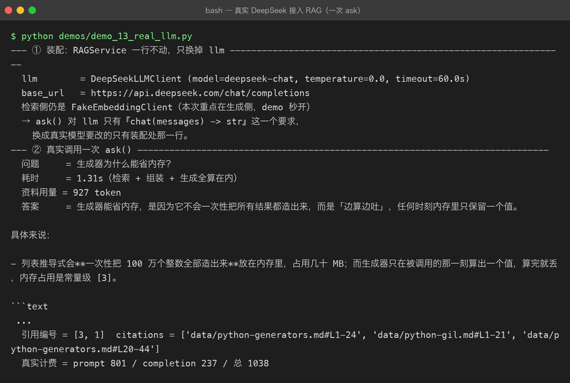
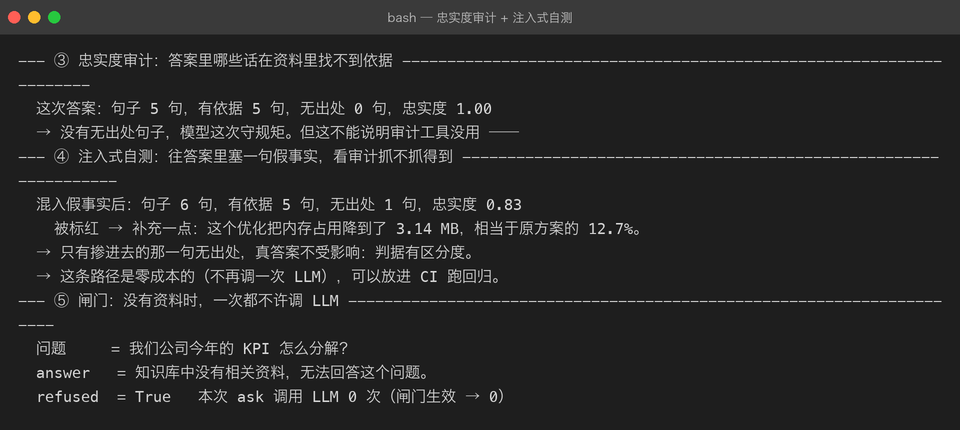
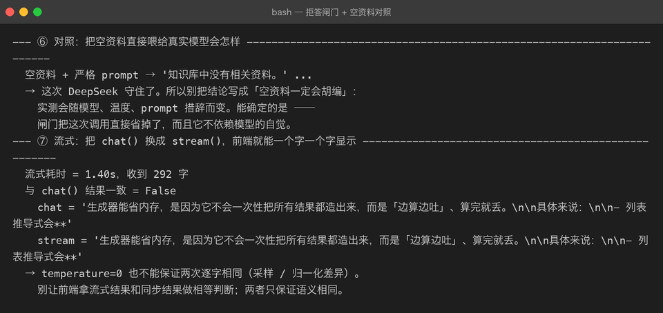

Milestone 12 — 真实 LLM 接入与忠实度审计
目标：把
RAGService.ask()最后的FakeLLMClient换成真实模型（DeepSeek）， 并回答一个只有真实接入才会被问到的问题：模型回答里哪些话没有依据？
目录
- 为什么不能一直用 FakeLLMClient
- 设计：OpenAI 兼容协议骨架
- 代码：DeepSeekLLMClient
- RAGAnswer 留档：把真实 prompt 保存下来
- 忠实度审计
- 真实运行截图
- 坑清单
- 自检清单
1. 为什么不能一直用 FakeLLMClient
FakeLLMClient 只干一件事：从【参考资料】里挑和问题词面最相关的句子， 按编号拼成答案。它的行为是确定性的：资料里没有的词，它绝对不说。
真实模型则相反：它会总结、类比、举例、补充背景知识。 这些行为有一半正是我们想要的（回答更自然、可读性更高）， 另一半则是 RAG 最怕的：幻觉——答案里混进了资料里没有的信息。
所以接真实 LLM 时，不能只换 client，还要加一层事后审计：
模型答完 → 忠实度审计 → 标出无出处句子 → 人工/自动处理
2. 设计：OpenAI 兼容协议骨架
国产大模型这几年已经全部收敛到 OpenAI 的 /chat/completions 协议， 区别只剩 base_url 和模型名。和 11 章 embedding 层一样， 我们先抽出协议骨架，再派生具体厂商：
| 类 | 职责 |
|---|---|
BaseLLMClient | 抽象：只有 chat(messages) |
OpenAICompatibleLLMClient | 协议骨架：chat + stream + timeout + temperature + usage 记录 |
DeepSeekLLMClient | 只填 BASE_URL 和 MODEL |
为什么把 stream() 也放进骨架？因为 Web 端最终要用 SSE（P03 已验证）， RAG 链路只比 chat 多了一个检索阶段。骨架里直接提供流式， 将来复用 RAGService 时不需要再开一套 client。
3. 代码：DeepSeekLLMClient
核心片段（完整实现见 src/rag/llm.py）：
class OpenAICompatibleLLMClient(BaseLLMClient):
BASE_URL = "https://api.deepseek.com/chat/completions"
MODEL = "deepseek-chat"
TIMEOUT = 60.0
def __init__(self, api_key: str, *, model: str = "",
timeout: float = TIMEOUT, temperature: float = 0.0):
if not api_key:
raise RAGLLMError("api_key 为空，无法调用大模型接口")
self.api_key = api_key
self.model_name = model or self.MODEL
self.timeout = timeout
self.temperature = temperature
self.last_usage: dict | None = None
def chat(self, messages: list[dict]) -> str:
import httpx
payload = {
"model": self.model_name,
"messages": messages,
"stream": False,
"temperature": self.temperature,
}
with httpx.Client(timeout=self.timeout) as client:
resp = client.post(self.BASE_URL, headers=self._headers(),
json=payload)
...
self.last_usage = data.get("usage") or None
return content接入 RAGService 时只改装配点：
llm = DeepSeekLLMClient(api_key=os.environ["DEEPSEEK_API_KEY"])
service = RAGService(retriever, reranker, assembler, llm, settings)
answer = service.ask("生成器为什么能省内存？")RAGService.ask() 一行代码都不需要动。
4. RAGAnswer 留档：把真实 prompt 保存下来
RAG 出现「模型答的不是我喂给它的那段」时，最难的是复现。 所以 RAGAnswer 增加了一个字段 system_prompt：
@dataclass(frozen=True)
class RAGAnswer:
answer: str
citations: list = field(default_factory=list)
context_tokens: int = 0
system_prompt: str = "" # ← 12 章新增：真实发出去的系统提示它让审计工具可以直接从答案对象里取回 prompt，不需要再跑一遍检索。
5. 忠实度审计
审计在 src/rag/evaluation.py 里实现。逐句判断「这句话有没有依据」。 两条判据同时生效：
5.1 强词判据
句中的数字和英文标识符是最容易编造的部分。 如果这类词在资料里找不到，就记为「无出处」。
实测踩坑：第一版写成了「至少一个命中」，结果语料里恰好有 "MB" 和 "3.13"， 一句纯编造的数字事实被判定为有依据。改成命中比例 ≥ 50% 之后才拦得住。
5.2 实词覆盖率
中文里「的 / 了 / 是」这类虚词几乎每个句子里都有， 留在分母里会把覆盖率刷到 1.0，让审计失去区分度。 先过滤掉常见虚词，再算实词命中率：
def _content_tokens(text: str) -> set[str]:
return {t for t in _token_set(text) if t not in _STOPWORDS}5.3 注入式自测
真实答案有时确实 100% 有出处，这会让审计工具看起来像摆设。 我们在 demo 里手动往答案里塞一句假事实，验证它能否被标红：
POISON = "补充一点：这个优化把内存占用降到了 3.14 MB，相当于原方案的 12.7%。"
poisoned = answer.answer + POISON
report = check_faithfulness(poisoned, answer.system_prompt)
# → 忠实度 0.83，被标红的是 POISON 这一句如果审计工具自己测不过这一关，它就不配上生产。
6. 真实运行截图
全部来自 demos/demo_13_real_llm.py，真实调用 DeepSeek deepseek-chat。
6.1 真实 ask()：一次完整的在线问答链路

注意两点：
- 真实计费被记录下来：
prompt 801 / completion 237 / 总 1038。 - 模型回答里带了
[3]编号， citations 可以回原文档。
6.2 忠实度审计 + 注入式自测

真答案忠实度 1.00；混进一句假事实后，只有那一句被标红。
6.3 拒答闸门 + 空资料对照

没有资料时 RAGService 直接返回拒答，这次 ask 调用 LLM 0 次。 右图的空资料对照也显示 DeepSeek 这次守住了 prompt，但结论要说清楚：
这道闸门不是防模型「不乖」，而是提供确定性：不依赖模型自觉，不花这次钱。
7. 坑清单
| # | 现象 | 原因 | 正确做法 |
|---|---|---|---|
| 1 | 上线后 LLM 调用间歇性超时 | httpx 默认 timeout 只有 5s，生成类接口首 token 经常 >10s | 显式设 timeout=60.0，并纳入监控 |
| 2 | 同一问题每次答案不同，评测报告飘 | 默认 temperature > 0，采样有随机性 | RAG 设 temperature=0.0，保证可复现 |
| 3 | 流式结果与同步结果不一致 | 两次调用是两次采样，即使 temperature=0 也未必逐字相同 | 前端不要用等号比对，只保证语义一致 |
| 4 | 真实计费看不到 | 没读返回体里的 usage | client 内记录 last_usage，打日志 |
| 5 | 答案里没 [n] 编号， citations 无法对齐 | 模型不遵守格式指令 | 留 system_prompt 并做忠实度审计兜底 |
| 6 | 忠实度审计只报 1.00，区分度不足 | 虚词 / 常用词把覆盖率刷高 | 过滤虚词 + 强词比例判据 + 注入式自测 |
| 7 | 重试层级混乱，一次抖动请求四次 | client 内与 RAGService 都重试 | RAGService 重试一次即可；client 只负责单次请求 |
8. 自检清单
- [ ] 能解释
RAGService为什么只改装配点就能换真实模型 - [ ] 能说明
temperature=0的作用和局限 - [ ] 知道
last_usage该记录在哪里、用于什么 - [ ] 能写出注入式自测，验证忠实度审计不是摆设
- [ ] 知道流式结果与同步结果为什么不能做字符串相等判断
- [ ] 理解拒答闸门不只是防胡说，更是为了省钱和确定性
上一章：11-real-service-integration.md —— 真实 embedding + Chroma 持久化
下一章：待发布 —— FastAPI Web API / 真实 RAG 评估 / 接入真实 reranker
回到项目主页：../README.md